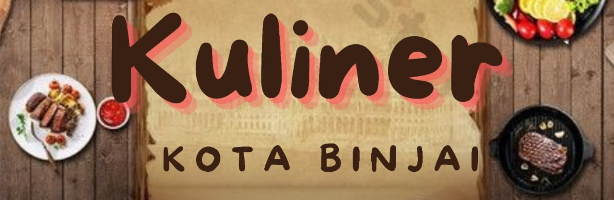

Kuliner Kota Binjai!!!
Binjai merupakan salah satu kota di Sumatra Utara yang dulunya jadi ibu kota Kabupaten Langkat.
Wilayah berjuluk Kota Rambutan ini terletak 22 km di sebelah barat Kota Medan, tepatnya berbatasan langsung dengan Kabupaten Langkat dan Kabupaten Deli Serdang.
Kota bernuansa asri ini punya sederet kuliner andalan yang siap membuat pengalaman wisata kuliner kian menyenangkan.
Nah, kali ini kita akan membahas beberapa kuliner yang dikota Binjai. Yuk, kita simak berikut ini.

Mie Sop Ayam
Menyajikan cita rasa mie kuning kenyal yang disiram dengan kuah segar. Cicik tambahan topping seperti bakso dan suwiran daging pun melengkapi seporsi.

Tahu Walik
Camilan populer di Binjai, disajikan bersama cocolan sambal.
Tahu balik hanya disajikan bersama sepiring bawang goreng dan irisan daun seledri yang bisa diracik dengan kecap manis.

Es Campur Kalimantan
Pelengkap yang menyegarkan, berisi Lengkong bertekstur lembut, tapai ubi, cendol, dan kacang merah.
Perpaduannya membuat es campur ini punya banyak tekstur.

Bebek Lombok Ijo
Bebek irebus terlebih dahulu agar dagingnya lebih lembut, lalu digoreng dan ditambahkan bumbu-bumbu
berupa bawang, tomat, dan cabai hijau yang sudah digiling. Hidangan ini tidak terlalu pedas dan bisa disantap dengan nikmat.

Nasi Goreng
Nasi Goreng merupakan masakan nusantara yang sangat populer di Asia. Sesuai namanya, cara membuat nasi goreng dengan menggoreng nasi putih
yang diberi bumbu tambahan, seperti kecap manis, garam, merica, saus tiram, serta akan diberi tambahan telur dadar.

Bakso
Bakso merupakan campuran daging sapi giling yang dicampur dengan tepung tapioca dan dibentuk
mirip bola-bola kecil biasanya menggunakan daging sapi tapi banyak juga yang menggunakan daging ikan, ayam, udang, dan kerbau.